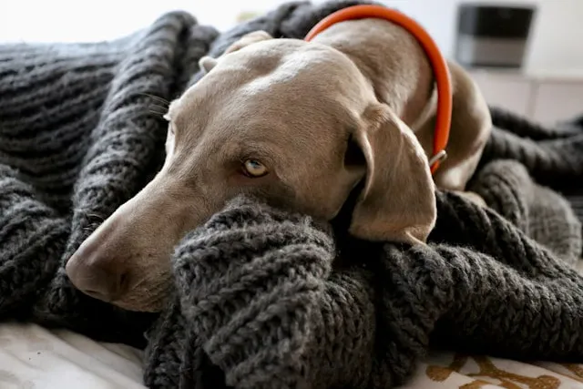

Cuidados básicos durante los días fríos
Con la llegada del otoño y el invierno, es importante adaptar algunos hábitos para proteger la salud de tu perro. Aunque el pelaje funciona como una barrera natural frente al frío, no siempre es suficiente, especialmente en perros pequeños, de pelo corto, cachorros, perros senior o razas braquicéfalas (como bulldogs o pugs). Mantener sus vacunas y controles al día es fundamental, ya que durante esta época aumentan los resfríos, problemas respiratorios y molestias articulares. También conviene prestar atención a su lugar de descanso: una cama mullida, elevada del suelo y alejada de corrientes de aire ayuda a conservar mejor su temperatura corporal durante la noche.
"En invierno, proteger a tu perro no significa dejar de pasear, sino adaptar sus cuidados al clima."
Paseos, alimentación y protección frente a la humedad
El ejercicio sigue siendo esencial en invierno, pero conviene adaptar los horarios. Lo ideal es salir a pasear durante las horas más templadas del día, como el mediodía o primeras horas de la tarde, evitando mañanas muy frías o noches húmedas. Si llueve, al volver a casa es muy importante secar bien sus patas, pecho, abdomen y axilas, ya que la humedad puede favorecer resfríos y dermatitis. En cuanto a la alimentación, algunos perros que realizan más actividad física o pasan tiempo al exterior pueden necesitar un ligero ajuste en sus porciones, siempre cuidando que no aumenten de peso (Consulta nuestro artículo ¿Cuántas veces al día debe comer un perro según su edad?).

Abrigo, pelaje y señales de alerta
No todos los perros necesitan ropa, pero en ciertos casos un abrigo o impermeable puede ser de gran ayuda, especialmente en perros de pelo corto, mayores o con sensibilidad al frío. Mantener el pelaje limpio y bien cepillado también es clave, ya que un pelo enredado o húmedo pierde capacidad aislante. Observa siempre señales como temblores, rigidez al caminar, levantar las patas repetidamente o buscar volver rápido a casa: son indicios claros de que el frío le está afectando. La clave está en anticiparse y adaptar la rutina a las necesidades específicas de cada perro.
Conclusiones
- Mantén sus vacunas, cama y pelaje en óptimas condiciones durante el invierno.
- Ajusta paseos y secado al volver a casa, especialmente en días lluviosos.
- Observa señales de frío y adapta abrigo, alimentación y descanso según su edad y raza.
¿Encuentras útil el artículo?
Compártelo con alguien más